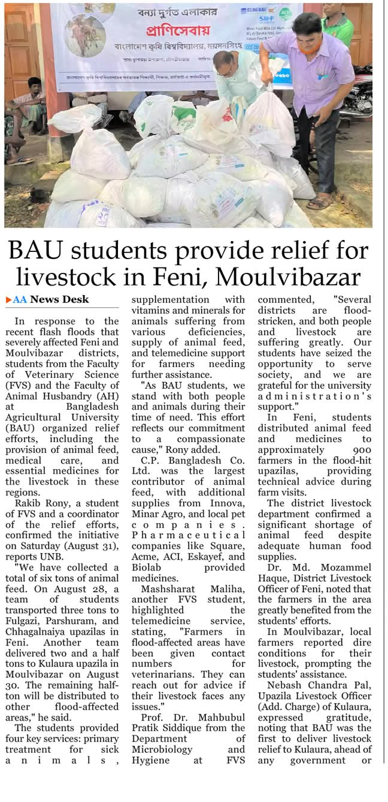

Social Work
Disaster Response & Community Service

Volunteer Veterinary Responder – Flood Relief for Livestock
Feni & Moulvibazar Districts | BAU | August 2024
- Participated in emergency veterinary relief in flood-affected areas led by Faculty of Veterinary Science, BAU.
- Delivered over 6 tons of feed and medicine with the Animal Saviors of BAU team.
- Provided treatment, nutrition, and telemedicine support to livestock.
- Supported ~900 farmers and collaborated with District Livestock Offices.
- Effort recognized in national media (UNB) as a major student-led campaign.
Environmental Engagement & Sustainability
Green Ambassador – “Plant the Future” Initiative
GREEN Network | Awarded: 2018
- Awarded Green Certificate for contributions to tree plantation and awareness.
- Engaged in grassroots action to combat climate change impacts.
- Demonstrated global citizenship and eco-conscious responsibility.
- Recognized by GREEN’s CEO as a standout national participant.
Leadership & Awards
Leadership & Cultural Engagement
Organizing Secretary – Team Utshob (Cultural Club)
Bangladesh Agricultural University | May 2024 – Present
- Led Team Utshob, promoting Bangladeshi culture and traditions on campus.
- Organized major events for Pohela Boishakh, Victory Day, Nobanno Utsab, and more.
- Handled event logistics, promotion, and team coordination.
- Promoted national identity and cultural storytelling through art and performance.
üì∏ Creative Work & Visual Storytelling
Documentary Photographer – Rabies Awareness Campaign
SEAOHUN | 2024
- Captured documentary-style visuals highlighting rabies prevention and animal welfare efforts.
- Photographed fieldwork, community education, and vaccination drives to support awareness.

Top 20 Finalist – Nature & Adventure Photography Contest
2nd Nature & Adventure Fest 2018 | JEEC
- Selected as a Top 20 Finalist nationally in a youth environmental photo contest.
- Recognized for work capturing nature’s beauty and fragility.